非线性最小二乘
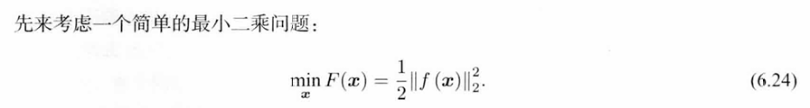
$x \in \mathbb{R}^n,f(x)是多元函数:\mathbb{R}^n \to \mathbb{R}$
注意到的是极值点对应的只是局部最优，如果f是凸的那么局部最优就是全局最优，如果是非凸的则要考虑到避免落入局部最优，如果f是数学形式上很简单的函数，则可以直接用解析形式来求。如果f比较复杂用直接法来求就不太可能了，一次直接求解不行，可以考虑逐步迭代逼近的方法。
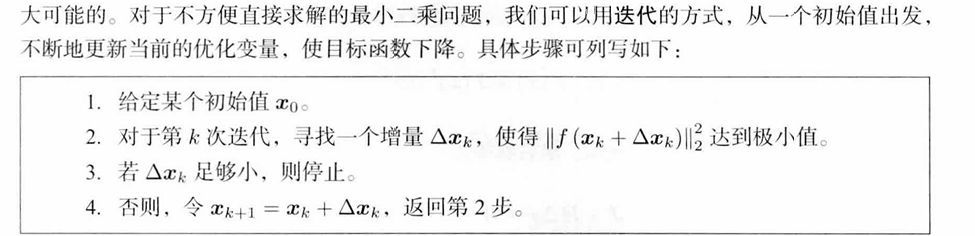
泰勒展开，保留第一项和第二项，得到Jacobian矩阵和Hessian矩阵，注意到我们要求的是增量$\Delta x_k$
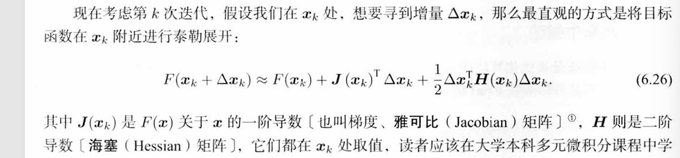
牛顿法
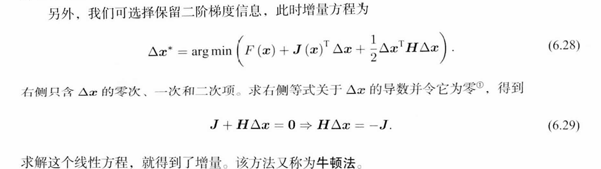
Hessian阵难以求出，具体到最小二乘还有GN和LM
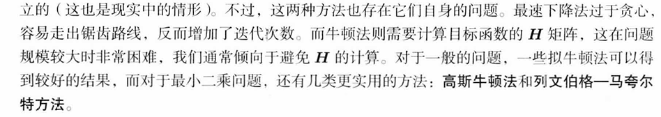
GN：
这里是将f展开而不是F
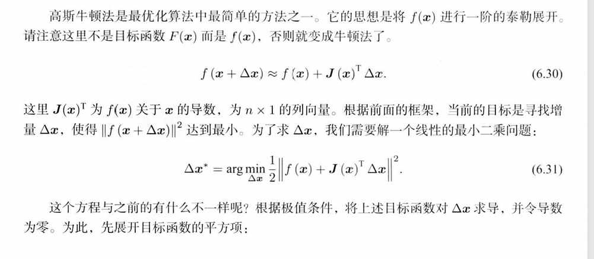
对$\Delta x$求导，并令导数等于零
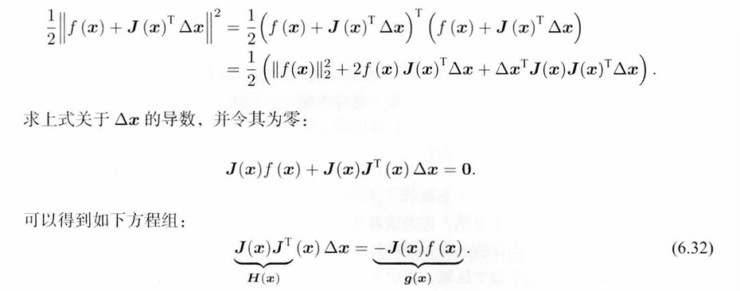
高斯牛顿方程，定义左边系数为H
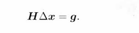
对比牛顿法，GN使用$JJ^T$作为Hessian的近似。从而省略了H的计算
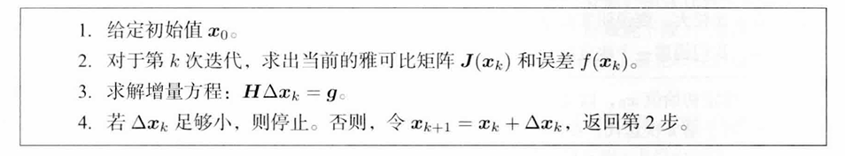
由于泰勒展开只对局部有比较好的近似效果，所以自然需要给$\Delta x$添加一个范围，称为信赖域
LM方法是一种信赖域方法
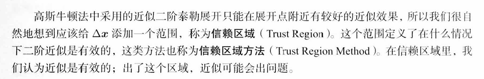
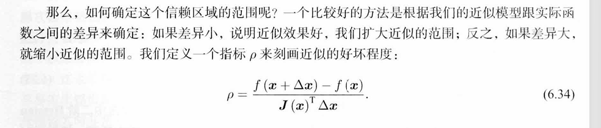
通过对$\rho$进行放缩
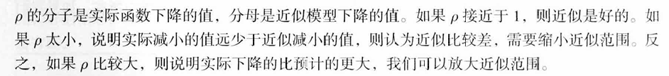
改良版的GN方法
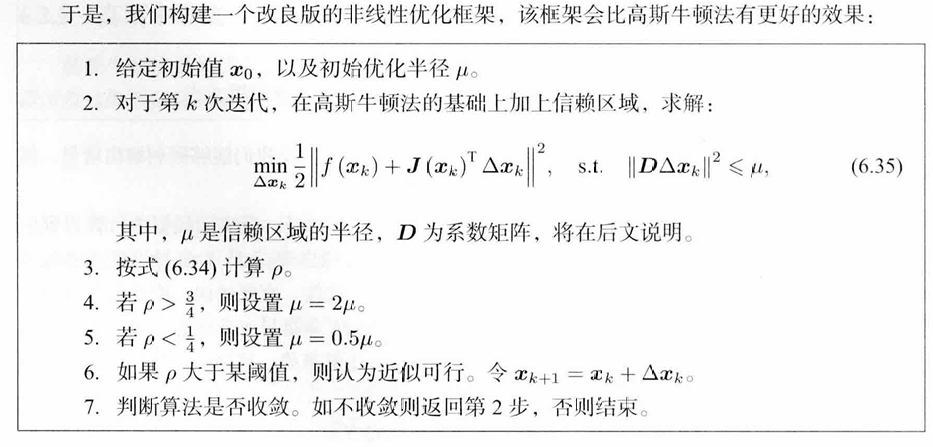
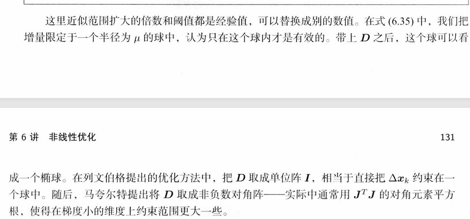
LM算法进一步用到了拉格朗日乘子法，将约束项并入到优化中
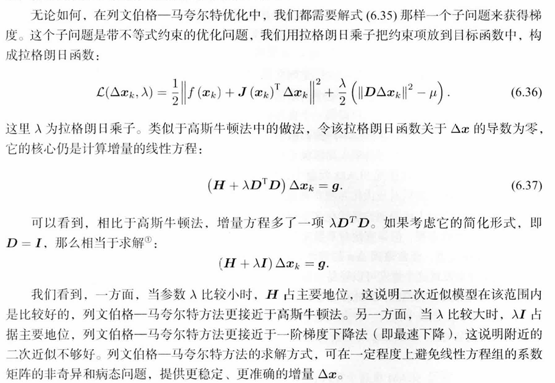
手写GN与使用Ceres库
Ceres库是专门用于求解非线性最小二乘的函数库
参考：
Numercial Optimalization